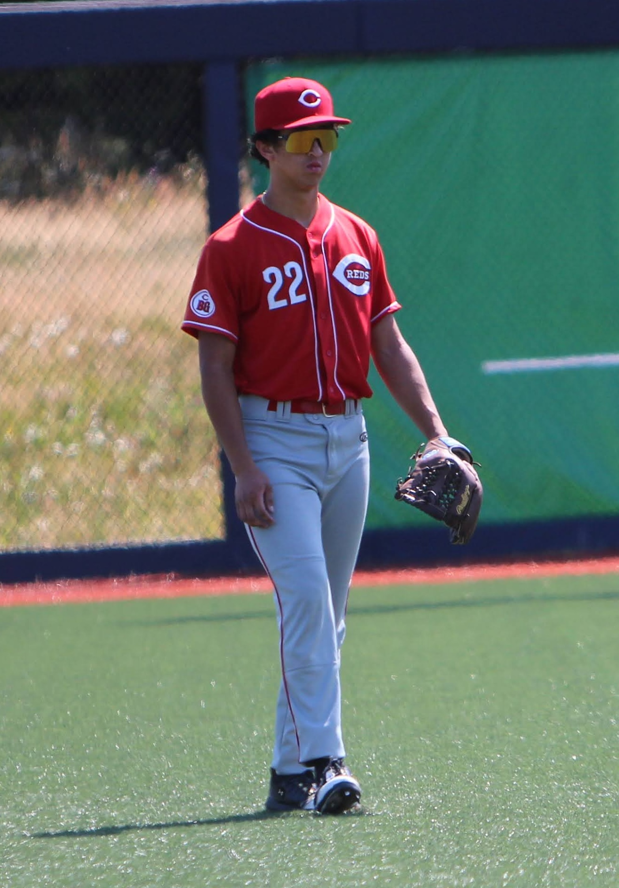
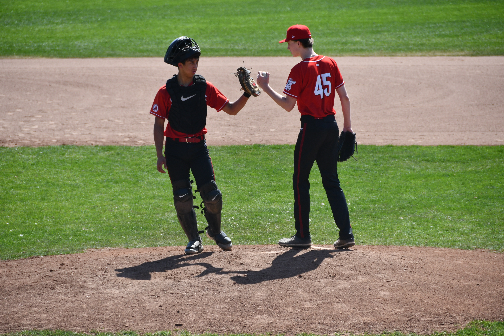

— About Me
4 worlds, one story

— 01
Baseball
14 years of competitive experience, including representation at the international level, all while mentoring future athletes at the same time.
- Ranked #3 Canadian Freshman in 2022 by Prep Baseball Report
- U14 Canadian National Team
- U18 Filipino National Team
- Featured in the baseball documentary "Hard 90 to Home," filmed in Los Angeles
- Former Baseball Instructor at Nicholson Baseball




— 02
Flight
Earning my Private Pilot License transformed how I view aerodynamics, aircraft systems, and disciplined decision-making under pressure.
- Transport Canada Private Pilot License (PPL) — Single-Engine Land VFR
- ISED Canada Restricted Operator Certificate – Aeronautical (ROC-A)
- Cross-country VFR navigation, METAR/TAF weather analysis, and ForeFlight planning
- Hands-on flight experience in Cessna 152 aircraft across British Columbia

— 03
Golf
Away from the shop and classroom, golf is where athletic mechanics meet patience, course strategy, and continual self-calibration.
- Translating rotational biomechanics from competitive baseball into swing mechanics
- Focused on precision, repeatable fundamentals, and calm execution

— 04
Engineering
Pursuing Mechanical Engineering (Aerospace concentration) at UBC Okanagan to bridge hands-on flight experience with structural and aerodynamic design.
- Aerostructures & Composites subteam member at UBCO Aerospace (SRAD liquid rocket)
- Hands-on wet layup fabrication with carbon fiber, fiberglass, and epoxy resin systems
- 3D CAD modeling and Flow Simulation CFD validation in SolidWorks & ANSYS
- Focused on lightweight composite airframes and fluid-structure interaction